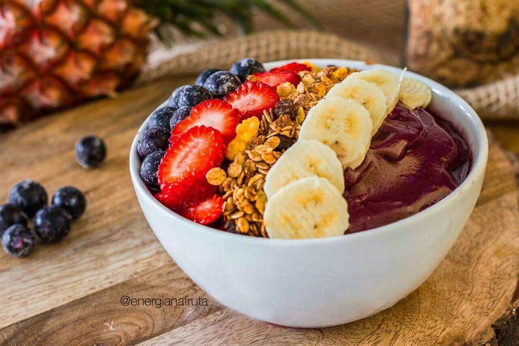
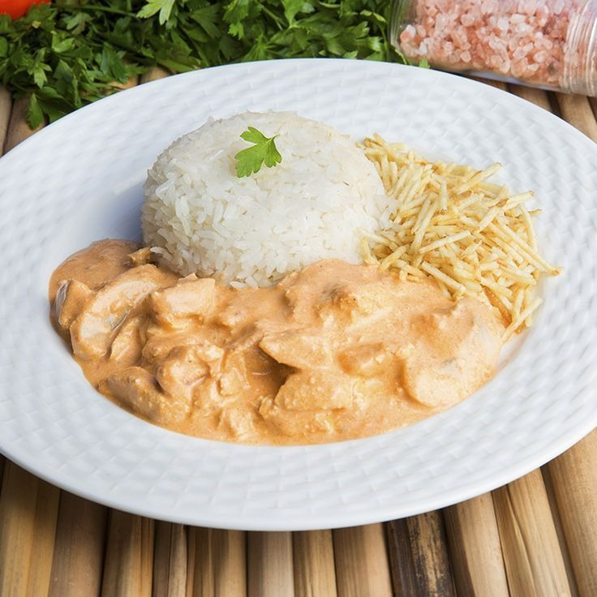

Gastronomia e Mixologia



Confira o que é:
Gastronomia

A gastronomia é a arte e a ciência de preparar e apreciar alimentos, unindo técnica, cultura e criatividade. Mais do que cozinhar, envolve compreender ingredientes, métodos de preparo e tradições culinárias de diferentes regiões do mundo. Ela busca criar experiências sensoriais que vão além do sabor, explorando aromas, texturas e apresentações.
Mixologia
A mixologia é a arte e a técnica de criar e preparar bebidas, especialmente coquetéis, explorando combinações de sabores, aromas e apresentações. Mais do que simplesmente misturar ingredientes, envolve conhecimento profundo sobre destilados, licores, frutas, especiarias e técnicas de preparo, buscando equilíbrio e harmonia em cada criação.